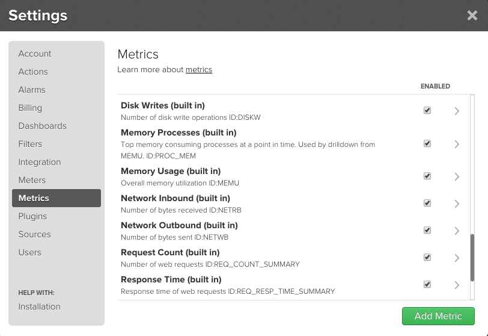
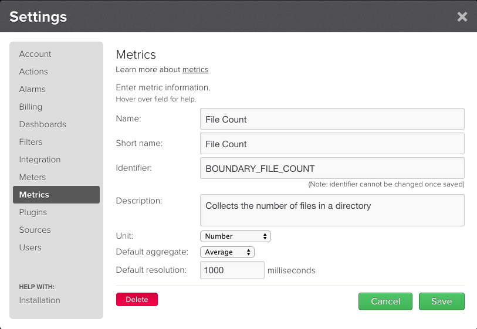

Metric Definitions
Metric definitions in TrueSight Pulse provide metadata about measurements input to the TrueSight Pulse monitoring system. This page provides details on metric definitions including:
- How to define metrics
- Best practices with respect to their naming.
A metric definition consists of 7 values:
- Name - unique metric identifier
- Display Name - Label used within the web interface.
- Short Display Name - Shortened label used with the web interface.
- Description - Text that describes the metric.
- Default Aggregate - Type of aggregate displayed by default
- Unit - Quantity measured by this metric
- Default Resolution - Expected frequency of measurement update
Name
Metric identifiers are unique immutable keys within a TrueSight Pulse account. Metric identifiers are referenced in the plugin manifest (see Plugin Manifest) and when a plugin is deployed in an account other then where the metric definitions were created, they are copied into the new account.
Metric identifiers are case insensitive but by convention they are always in upper case letters (A-Z) with allowance for a underscore (_) or dash(-) between logical words. This convention should be adhered to when defining or referencing a metric.
Metric identifiers from the same plugin should have a prefix to
group similar metrics (e.g. AWS_ELB_LATENCY). Metric names that are prefixed with PULSE
should be considered reserved for TrueSight Pulse’s internal use.
Display Name
Display name is the primary label used by web user interface to reference a metric and/or its measurement. The display name appears in the following locations within the web user interface:
- Headings of graphs in dashboards
- List of items with the metrics settings dialog
- Drop down list when defining an Alarm
Each display name should have a common prefix so that similar metrics are grouped together and provides a hint of the system or identity to be monitored (e.g. APACHE_BYTES_PER_REQUEST).
Short Display Name
The short display name is used in cases where using there is limited space to use the display name as a label. For example the short display name is used as:
- List of items available metrics when editing a dashboard (Settings => Dashboards).
- Label when selecting a data point on a dashboard.
The short display name should be limited to 20 characters or less.
Description
Should be a concise definition that describes the metric. The description should indicate if the metric is a rate, what are the units of the metric (e.g. x/second),etc.
When building a dashboard using the dashboard editor, the tool tip associated with each item in the list of available metrics is the description.
Default Aggregate
Default aggregate indicates which type of aggregate is displayed in dashboards by default. The following aggregates are supported:
- avg
- max
- min
- sum
Unit
A metric quantity is described by a unit which is one of the following:
- bytecount
- duration
- number
- percentage
Default Resolution
Default resolution describes how often measurements for this metric will be updated. This value is used to extend the line on a dashboard to provide better visualization, instead of drawing single points.
Defining Metrics
Metric definitions are defined in TrueSight Pulse using either:
- Web user interface
- REST APIs
- Command line utilities.
Details on the use of the REST APIs for metric definition can be found here. The remaining methods are described in the next sections.
Defining Metrics Using the Web User Interface
- Login into TrueSight Pulse
- Display the settings dialog by clicking on the settings icon in the menu:
- Click on Metrics in the left hand side of the dialog which then displays the Metrics dialog:
 4. Click on the Create Metric button which displays a form to define a new metric. Fill out the form as shown here:
 5. Click on the Save button to create the metric. 6. Click on the Close button to dismiss the dialog.
Defining Metrics Using Command Line Utilities
- Install the TrueSight Pulse API CLI.
- Create the metric using
metric-create:
$ metric-create -n PULSE_FOO_METRIC_IN -d "Pulse Foo Metric In" -s "Foo In" -i "Tracks the Pulse Foo Metric" -g AVG -i number -r 1000
{
"result": {
"success": true
}
}
Batch Definition of Metrics Using Command Line Utilities
- Install the TrueSight Pulse API CLI, if not already installed, and configure according to instructions here
- Define metrics in a JSON file named
metrics.json:
{
"PULSE_METRIC_ONE": {
"defaultAggregate": "AVG",
"defaultResolutionMS": 2000,
"description": "Example metric one for my meter plugin",
"displayName": "Metric One",
"displayNameShort": "Metric #1",
"isDisabled": 0,
"unit": "number"
},
"PULSE_METRIC_TWO": {
"defaultAggregate": "MAX",
"defaultResolutionMS": 5000,
"description": "Example metric two for my meter plugin",
"displayName": "Metric Two",
"displayNameShort": "Metric #2",
"isDisabled": 0,
"unit": "percent"
}
...
}
- Create the metric definitions using
metric-create-batchcommand:
$ metric-create-batch -f metrics.json
{
"result": {
"success": true
}
}